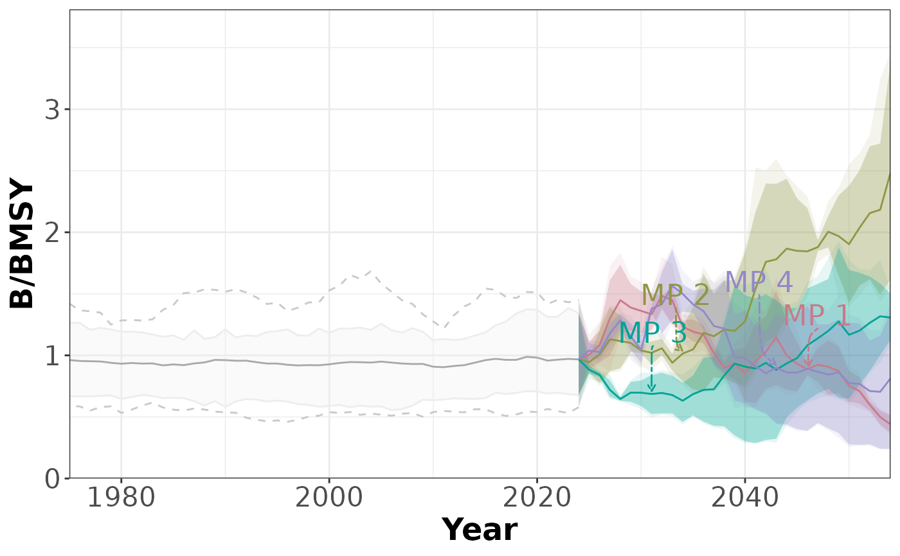
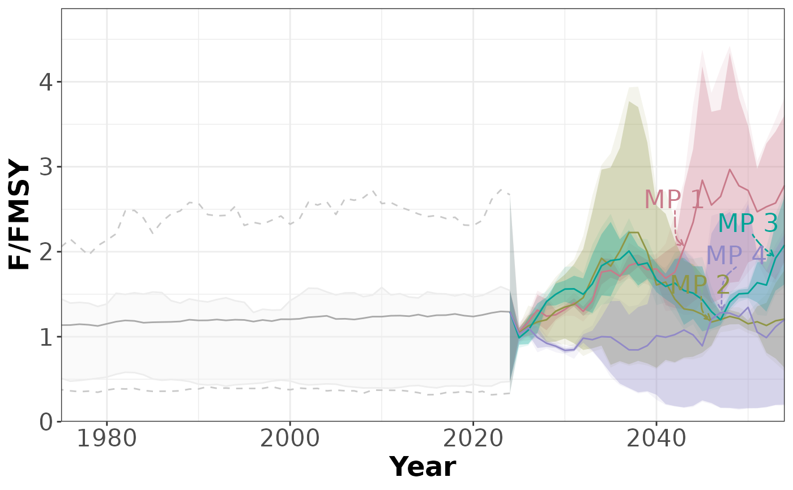
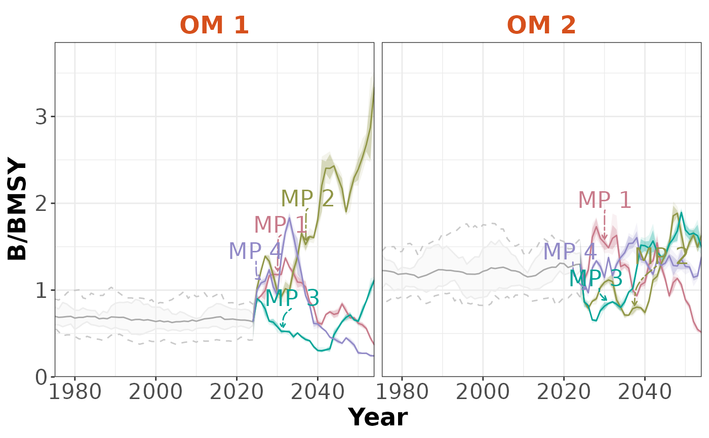
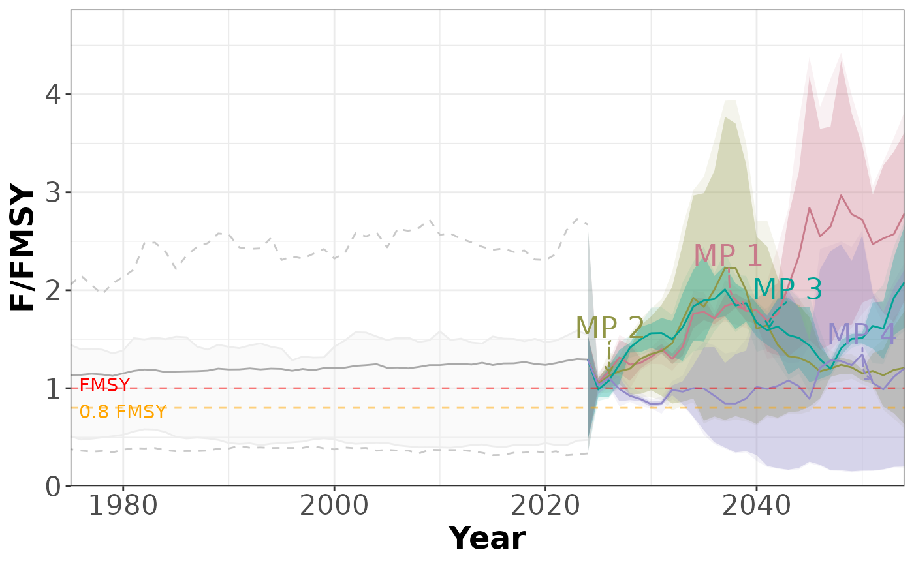
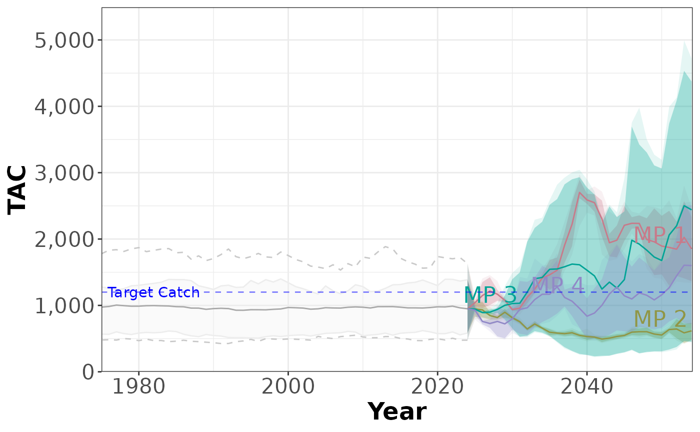
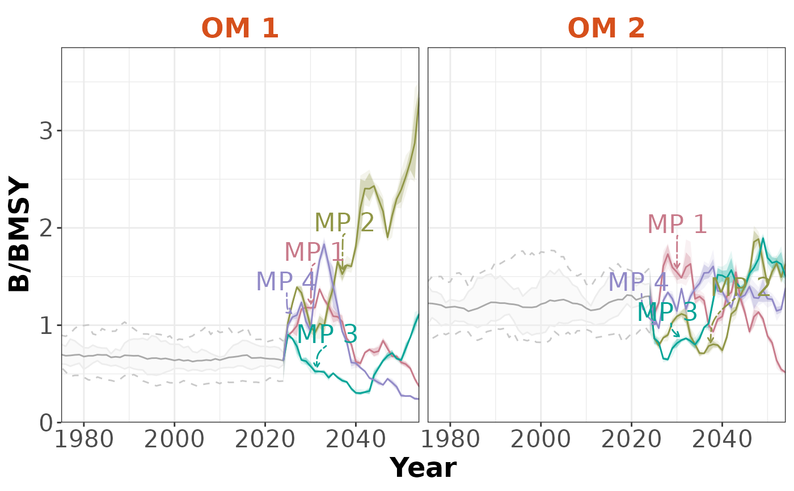
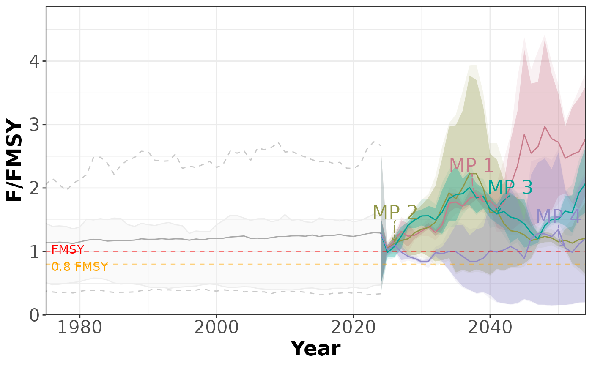
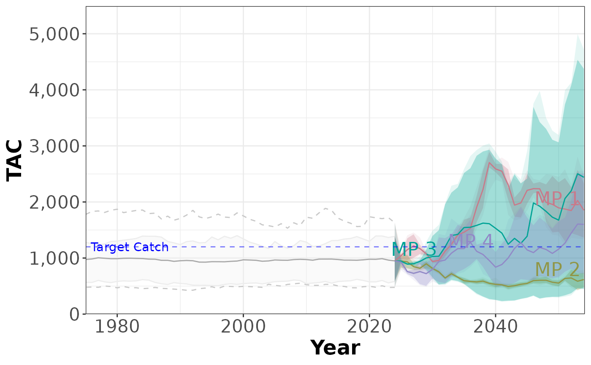

Plot the historical and projected values for a performance indicator.
Usage
plotTimeseries(
slick,
PI = 1,
byMP = FALSE,
byOM = FALSE,
includeHist = TRUE,
ncol = 4,
col_line = "darkgray",
includeQuants = TRUE,
includeLabels = TRUE,
MeanMed = c("mean", "median"),
fill_ribbon1 = "#ededed",
col_ribbon1 = "#ededed",
quants1 = c(0.25, 0.75),
alpha1 = 0.3,
fill_ribbon2 = "white",
col_ribbon2 = "#c9c9c9",
linetype_ribbon2 = "dashed",
quants2 = c(0.1, 0.9),
alpha2 = 0.1,
MP_label = "Code",
col_title = "#D6501C",
size.title = 18,
size.axis.title = 18,
size.axis.text = 16,
size.mp.label = 6,
linewidth.median.line = 0.5,
targ_color = "green",
targ_name = "Target",
lim_color = "red",
lim_name = "Limit",
inc_y_label = TRUE,
sims = NULL,
lang = "en"
)Arguments
- slick
A
Slick-class()object- PI
A numeric value specifying the performance indicator to plot
- byMP
Logical. Facet by MP? Defaults to FALSE, where all MPs are shown on the same plot
- byOM
Logical. Facet by OM? Defaults to FALSE where values are calculated as mean across OMs
- includeHist
Logical. Include the historical period in the projections?
- ncol
Numeric. Number of columns if faceting by MP or OM
- col_line
Color for the median line (historical)
- includeQuants
Logical. Include quantile shading for the projections?
- includeLabels
Logical. Include MP labels?
- MeanMed
Character. Plot the
'mean'(default) or'median'.- fill_ribbon1
Fill color for the inner ribbon
- col_ribbon1
Color of the line for inner ribbon
- quants1
Quantiles for the inner ribbon. Numeric length 2
- alpha1
Alpha for the colored MPs inner shading
- fill_ribbon2
Fill color for the outer ribbon
- col_ribbon2
Color of the line for outer ribbon
- linetype_ribbon2
Line type for outer ribbon
- quants2
Quantiles for the outer ribbon. Numeric length 2.
- alpha2
Alpha for the colored MPs outer shading
- MP_label
Label to use for the MPs. Either
CodeorLabel.Descriptionworks as well, but you probably don't want to do that.- col_title
Color of the MP title (if
byMP==TRUE)- size.title
Numeric length 1. Size for plot title
- size.axis.title
Numeric length 1. Size for axis title
- size.axis.text
Numeric length 1. Size for axis text
- size.mp.label
Numeric length 1. Size of MP labels. Set to NULL for no MP labels
- linewidth.median.line
Width of the mean/median line
- targ_color
Color for the target line (if it exists in
Target(Timeseries(slick)))- targ_name
Label for the target line
- lim_color
Color for the limit line (if it exists in
Limit(Timeseries(slick)))- lim_name
Label for the limit line
- inc_y_label
Include the label for the y-axis?
- sims
Optional. Numeric values indicating the simulations to include. Defaults to all.
- lang
Optional. Language (if supported in Slick Object). Either 'en', 'es', 'fr'
Examples
# Generate dummy values
nsim <- 10
nOM <- 2
nMP <- 4
nPI <- 3
nHistTS <- 50
nProjTS <- 30
nTS <- nHistTS + nProjTS
set.seed(101)
values <- array(NA, dim=c(nsim, nOM, nMP, nPI, nTS))
pi_means <- c(1,1, 1000)
for (om in 1:nOM) {
for (pi in 1:nPI) {
# PI identical for historical
histVals <- matrix(
pi_means[pi] *
cumprod(c(rlnorm(nHistTS*nsim, 0, 0.05))),
nrow=nsim, ncol=nHistTS, byrow=TRUE)
histVals <- replicate(nMP, histVals)
values[,om, , pi,1:nHistTS] <- aperm(histVals, c(1,3,2))
for (mp in 1:nMP) {
values[,om, mp, pi,(nHistTS+1):nTS] <- matrix(
pi_means[pi] *
cumprod(c(rlnorm(nProjTS*nsim, 0, 0.05))),
nrow=nsim, ncol=nProjTS, byrow=FALSE)
}
}
}
# Create and populate Object
timeseries <- Timeseries(Code=c('B/BMSY', 'F/FMSY', 'TAC'),
Label=c('B/BMSY',
'F/FMSY',
'TAC'),
Description = c('This is the description for PI 1',
'This is the description for PI 2',
'This is the description for PI 3'),
Value=values
)
# Last historical time step
TimeNow(timeseries) <- 2024
# Add values for time steps
Time(timeseries) <- c(rev(seq(TimeNow(timeseries), by=-1, length.out=nHistTS)),
seq(TimeNow(timeseries)+1, by=1, length.out=nProjTS))
# Check
Check(timeseries)
#>
#> ── Checking: "Timeseries" ──
#>
#> ✔ Complete
# Add to `Slick` object
slick <- Slick()
Timeseries(slick) <- timeseries
# Plots
plotTimeseries(slick)
#> ℹ Note: `MPs` is empty. Using default MP names and colors

plotTimeseries(slick, 2)
#> ℹ Note: `MPs` is empty. Using default MP names and colors

plotTimeseries(slick, 3)
#> ℹ Note: `MPs` is empty. Using default MP names and colors
 plotTimeseries(slick, byMP=TRUE)
#> ℹ Note: `MPs` is empty. Using default MP names and colors
plotTimeseries(slick, byMP=TRUE)
#> ℹ Note: `MPs` is empty. Using default MP names and colors
 plotTimeseries(slick, byOM=TRUE)
#> ℹ Note: `MPs` is empty. Using default MP names and colors

# Custom Reference Points
RefPoints(timeseries) <- list(
list(Name=c('0.5 BMSY', 'BMSY', '1.5 BMSY'),
Value=c(0.5, 1, 1.5),
Color=c('red', 'orange', 'green')),
list(Name=c('0.8 FMSY', 'FMSY'),
Value=c(0.8,1),
Color=c('orange', 'red')),
list(Name='Target Catch',
Value=1200,
Color='blue')
)
Timeseries(slick) <- timeseries
plotTimeseries(slick)
#> ℹ Note: `MPs` is empty. Using default MP names and colors
plotTimeseries(slick, 2)
#> ℹ Note: `MPs` is empty. Using default MP names and colors

plotTimeseries(slick, 3)
#> ℹ Note: `MPs` is empty. Using default MP names and colors

plotTimeseries(slick, byOM=TRUE)
#> ℹ Note: `MPs` is empty. Using default MP names and colors

# Custom Reference Points
RefPoints(timeseries) <- list(
list(Name=c('0.5 BMSY', 'BMSY', '1.5 BMSY'),
Value=c(0.5, 1, 1.5),
Color=c('red', 'orange', 'green')),
list(Name=c('0.8 FMSY', 'FMSY'),
Value=c(0.8,1),
Color=c('orange', 'red')),
list(Name='Target Catch',
Value=1200,
Color='blue')
)
Timeseries(slick) <- timeseries
plotTimeseries(slick)
#> ℹ Note: `MPs` is empty. Using default MP names and colors
plotTimeseries(slick, 2)
#> ℹ Note: `MPs` is empty. Using default MP names and colors

plotTimeseries(slick, 3)
#> ℹ Note: `MPs` is empty. Using default MP names and colors
